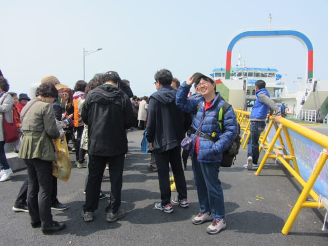
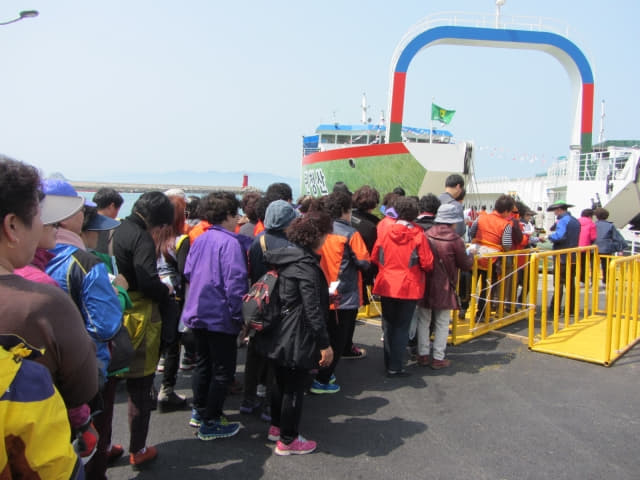
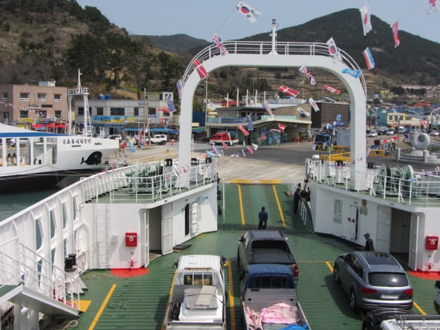

在離青山島碼頭不遠的「막끌리네식당」海鮮餐廳吃完滋味滿足的鮑魚午餐, 時間約中午十二時二十分, 我們是搭乘下午 13:00 的渡輪往莞島, 看見離可以上船的時間也差不多了, 便往碼頭售票處買了兩張船票, Ah~~~ 每位只是 7,000 韓元, 比來時便宜了 700 韓元!
往莞島的渡輪已經停泊在碼頭, 但仍然未可以上船。
看見仍然未可以上船, 便到碼頭旁的市場逛逛。在韓國經常見到當地人吃的外型怪異海產 — 海鞘, 聽說是超腥的, 極難入口, 韓國人那麼喜歡吃, 正好反映他們的強烈性格。
市場內也有出售乾貨和急凍海產。
在市場逛了一會, 於正午十二時三十分返回碼頭, 很多旅客都好像在「排隊」等候上船, 情況有點混亂, 其實這些場面在韓國都見慣的, 只是經常忘記自己身在韓國而已。

Okay! 可以上船了! 今天的旅客頗多。

登上了渡輪, 有了上次經驗, 知道買的是3等船艙, 隨便一間榻榻米房間都可以的, 便匆匆佔據一個有利位置坐下來。幸好來得快, 船艙不一會便擠滿了乘客。老實說, 在韓國真的不用客氣, 他們不會怪你的, 因為, 他們對其他人也絕對不會客氣的, 這正正是他們豪邁粗獷的性格。
放下了背囊, 因為乘客太多, 她負責看管行李, 由我獨自走上甲板看風景。看來所有旅客和汽車都登上了渡輪, 可以隨時出發。
船上有一輛貨車正載滿一袋袋黑壓壓的物體, 應該就是我們看到海上船隻打撈的東西, 近看也不肯定是什麼東東。
渡輪準時於下午一時開始起動。
吊板開始昇起! 渡輪緩緩駛離青山島碼頭。

渡輪緩緩駛離青山島碼頭, 向莞島進發! 正式和令人懷念的青山島說拜拜啦!
青山島~~~~~~~ 拜拜啦!